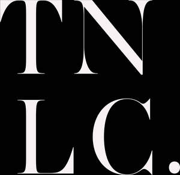

Trade Mark Journal No.2026/012 20 March 2026
UK00004348746 4 March 2026 (3,5,10,25,35)
Mark 1

Mark 2
- Class 3
- Massage oil; Massage oils and lotions; Body massage oils; Cleansing oil; Body oil; Massage oils, not medicated.
- Class 5
- Vaginal lubricants; Personal sexual lubricants; Sexual stimulant gels; Preparations for use in vaginal lubrication; Orgasm creams; Hygienic lubricants; Silicone-based personal lubricants; Water-based personal lubricants; Lubricant gels for personal use; Spermicides for application to condoms; Lubricants for medical use; Personal lubricants; Disposable menstruation underwear; Vaginal washes; Vaginal moisturizers; Contraceptives (Chemical -); Chemical contraceptives.
- Class 10
- Sex toys; Sex aids; Vibrators, being adult sexual aids; Penis enlargers, being adult sexual aids; Condoms; Artificial penises [adult sexual stimulation aids]; Spermicidal condoms; Artificial penises, being adult sexual aids; Condom catheters; Anal plugs; Artificial vaginas, being adult sexual aids; Benwa balls, being adult sexual aids; Adult sexual aids; Vaginal syringes; Love dolls [sex dolls]; Bed vibrators; Vaginal dilators; Enema syringes; Electric massage guns; Hot air vibrators for medical purposes; Condoms for hygienic purposes.
- Class 25
- Underwear; Underwear for women; Underclothes; Panties; Lingerie; Clothes.
- Class 35
- Advertising services for the promotion of e-commerce; Advertising of business web sites; Online marketing; Marketing services in the field of web site traffic optimization; Internet marketing; Business management of wholesale and retail outlets; Business management of retail outlets; Online retail store services in relation to clothing; Online retail store services relating to clothing; Online retail services relating to clothing; Online retail services relating to cosmetics; Online retail store services relating to cosmetic and beauty products; Online retail services relating to toys.
DOTCOM HUSTLE LTD